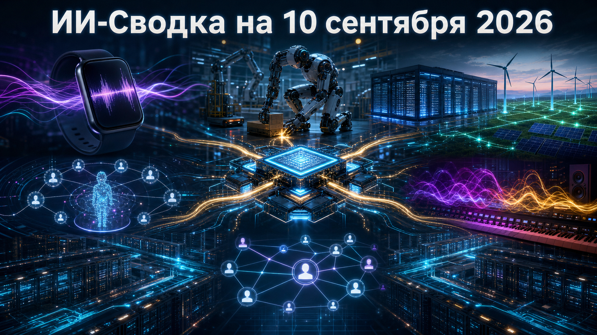

Конкуренция в ИИ всё сильнее зависит не только от качества моделей, но и от того, на каком кремнии они работают, сколько энергии потребляют и какие данные используются для обучения. В сегодняшней повестке также заметен переход ИИ-функций в повседневные устройства, усиление корпоративного контроля над агентами и сближение генеративного видео с исследованиями робототехники.
Отдельный сигнал для рынка — регулирование инфраструктуры становится более предметным: власти начинают связывать расширение дата-центров с ответственностью за энергоснабжение, а компании ищут новые способы управлять доступами автономных систем.
Arm анонсировала Neoverse CSS N4 — платформу для создания серверных процессоров, которую заказчики могут адаптировать под облачные и ИИ-нагрузки. Как сообщает Tom's Hardware, конфигурация предусматривает от 8 до 128 ядер Neoverse N4 на кристалл, до 256 МБ кеша L3, а также поддержку DDR5 или LPDDR6.
Платформа заявлена с интерфейсами PCIe 7/6, CXL 4.0 и UCIe, то есть ориентирована на гибкую компоновку вычислений, памяти и ускорителей в следующих поколениях серверов. Это не готовый массовый ускоритель ИИ, а базовый блок для партнёров Arm; заявления о производительности пока не подтверждены независимыми бенчмарками.
Apple показала для новых Apple Watch набор функций Audio Intelligence: Live Rewind позволяет вывести текстовую расшифровку предыдущих 15 секунд разговора, а Siri Recap формирует его заголовок, сводку и ключевые пункты. По данным TechCrunch, функции заявлены для Apple Watch Series 12 и Apple Watch Ultra 4.
Компания утверждает, что исходные аудиозаписи не сохраняются и не передаются Apple, а транскрипты и сводки защищаются сквозным шифрованием. Запуск важен тем, что ИИ-сводки разговоров переходят в массовую категорию носимых устройств, однако их практическая ценность и вопросы согласия собеседников будут зависеть от географии, языковой поддержки и реального поведения функций после выхода устройств.
Администрация Массачусетса ввела правила для дата-центров с пиковым спросом свыше 25 МВт. Как пишет TechCrunch, операторы должны обеспечить собственную чистую генерацию, профинансировать новую генерацию поблизости либо перечислять средства в фонд защиты потребителей электроэнергии.
По разъяснению властей штата, требование распространяется на 100% потребления объекта; одновременно приостановлен приём заявок на новую налоговую льготу для дата-центров. Это прямой регуляторный сигнал для ИИ-инфраструктуры: при планировании новых кластеров всё важнее будут не только доступ к GPU и земле, но и заранее подтверждённая энергетическая модель. Практические детали применения норм ещё потребуют уточнения.
OpenAI сообщила, что исследователь alignment Пола Кристиано войдёт в совет OpenAI Foundation и станет наблюдателем без права голоса в совете OpenAI Group PBC. В официальном сообщении OpenAI также указано, что он присоединится к Safety and Security Committee под председательством Зико Колтера.
Кристиано останется старшим техническим советником CAISI, но, по заявлению OpenAI, будет отстраняться от вопросов, связанных с компанией и оценками её моделей. Назначение усиливает экспертную составляющую надзора за безопасностью и защитой в лаборатории, однако само по себе не меняет её технические правила выпуска моделей: эффективность нового механизма будет определяться полномочиями комитета и прозрачностью его решений.
Suno представила новое семейство генеративных музыкальных моделей v6: базовую версию, экспериментальную v6-wild и ускоренную v6-mini. По данным TechCrunch, компания заявляет, что линейка обучалась на лицензированных данных Warner Music Group, BMG и Believe, а данные прежних моделей для неё не использовались.
Это заметный шаг на фоне исков и переговоров правообладателей с разработчиками генеративной музыки: лицензирование становится не только юридической защитой, но и элементом продуктовой стратегии. При этом объём лицензий, состав наборов данных и коммерческие условия партнёрств Suno публично не раскрыла, поэтому заявление об обучении на лицензированных материалах следует считать позицией компании, а не независимой экспертизой датасета.
Стартап Cymphony раскрыл общее финансирование на $30 млн, включая Series A на $25 млн, который совместно возглавили Sequoia и SMBC Fin Atlas Beyond Fund. Как сообщает TechCrunch, компания разрабатывает систему для инвентаризации и контроля доступов сотрудников, агентов ИИ и других не-человеческих идентичностей к корпоративным данным и сервисам.
Появление таких продуктов отражает новую практическую проблему: агенту недостаточно выдать ответ, он получает ключи, токены и права на действия в рабочих системах. Cymphony заявляет, что объединяет сигналы идентичностей, данных и активности для расследования инцидентов, но компания находится на ранней стадии, а характеристики продукта и масштаб его внедрения пока не получили независимого подтверждения.
Runway сообщила, что команда парижской ИИ-лаборатории Kinetix присоединяется к компании и будет работать в её исследовательском хабе в Париже. В анонсе Runway сделка связана с экспертизой Kinetix в 3D-движении человека и physically grounded генерации видео.
Runway прямо связывает новое усиление с работой над world models и generalist robotics, то есть расширяет исследовательский горизонт за пределы генеративного медиа. Финансовые условия, число перешедших специалистов и структура сделки не раскрыты; поэтому это прежде всего кадрово-технологический сигнал, а не подтверждение готового робототехнического продукта.